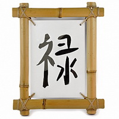

C H I N A
Calligraphy in fact - it's a cross between drawing and writing. Elegantly written on sheets of paper or silk characters are defined meaning, and at the same time, like a picture, bring aesthetic pleasure.
| Рicture | Name | Description |
|---|---|---|
| Wealth | It helps to improve the material well-being and activates the entire monetary sphere, assists in a career, enhances financial flows. It is best to hang the sign in the sector, which is responsible for Wealth or near the workplace at the office. | |
|  | Prosperity | It located next to the symbol of wealth, and is located in the sector. Character enhances the action of all the other mascots material well-being, as well as brings home positive energy and good luck in business. |
| Abundance | Tangible symbol of prosperity, but unlike his other brothers, this talisman is able to bring into the house and other benefits, in addition to money: fame, success, love, wish fulfillment and more. It all depends on the sector where you decide to place the character. | |
| Business success | Equally suitable for both business and people of creative professions. Like a magic magnet for it customers, business partners, it contributes to success in all undertakings, gives rise to new ideas and opportunities. It is best to place the symbol in your office or home desktop to attract energy of success and creativity. | |
| Happiness | banish bad thoughts, cleaning your house from the negative, and return you to the sincere joy of life. In the house, where there is this character will never be disagreements and quarrels, the family will be successful in all areas of relations between relatives will be more warm and romantic. | |
| Love | It will help to find a soul mate, make romance in existing relationships, love in every possible way to help keep their feelings to each other. To activate, place the mascot image Love sector. |